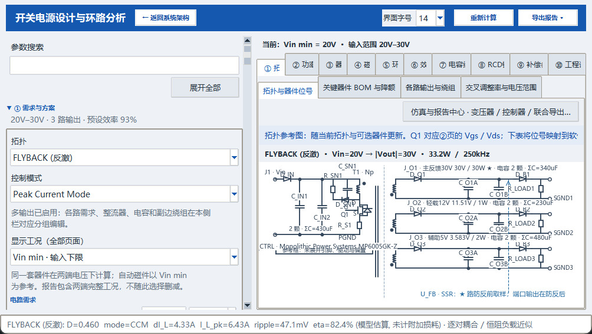

04 填写开关电源的需求与工况
先定义计算边界，再选器件。输入用连接器侧电压，输出用端口电压。隔离多路先确认主反馈，其他输出由匝比与工作条件估算。
系统画布 → 双击开关电源单元 → 左侧“① 需求与方案”。
操作步骤
- 选择拓扑和控制方式 按电路选择 Buck、Boost、反相 Buck-Boost、反激、准谐振反激或有源钳位正激。电压型和峰值电流型的环路对象不同，按实际控制器选择可用模式。
- 确定端点与额定点 依次填输入下限和上限、端口输出目标和输出功率。固定输入时上下限填同一个值。示例可从“示例 → 三路 CCM 反激 · 用户配置”载入，先核对需求再修改。
- 选择单路或隔离多绕组输出 多路时启用“启用隔离多绕组输出（最多 6 路）”，设置路数，在各路填写最大、最小功耗与纹波目标。在左栏“⑧ 反馈与补偿”选主反馈 OUT，核对该路端口设定值。
- 复核拓扑与显示工况 点“重新计算”，在右侧“① 拓扑”核对符号、器件位号和各路输出。用“显示工况（全部页面）”选 Vin min 或 Vin max，确认顶部显示的当前点。

对照左侧需求、右侧连接与位号及顶部显示工况。修改端点后要看数值是否出现在当前工况栏。
输入字段
| 字段或选项 | 单位或取值 | 输入的含义及用途 |
|---|---|---|
| 输入电压下限 Vin,min / 上限 Vin,max | V | 均为输入端口电压，范围必须为正且下限不高于上限。输入防反管启用时，板内母线另有压降。 |
| 端口电压 Vout、输出功率 Pout | V、W | 若启用输出防反，端口位于防反管之后。SSR 主反馈测量点位于防反管前电容端。 |
| 开关频率 fsw | Hz 或界面倍率 | 固定频率拓扑用所填频率。准谐振模式的该项用于上限检查，实际频率从工作点读出。 |
| 预设效率 η预设 | % | 用于工作点的功率预算。实际模型效率由各项损耗汇总求得。 |
| 输出纹波目标 ΔV/Vout | % | 输出峰峰纹波相对输出电压的设计限值。与实际计算纹波分别查看。 |
| 输出路数、隔离反馈方式、主反馈 / PSR 基准 OUT | 1–6、选择 | 分配有效副边路数和主反馈路。定频反激可按实际电路选择 SSR 或 PSR-MP6005。 |
| 各路最大 / 最小输出功率 | W | 交叉调整率扫描的每路负载端点。最小值按实际永久负载填写。旧项目两值相同表示该路没有轻重载差。 |
结果核对
界面仅切换当前显示工况。报告根据保存的输入范围生成结果，两端共用同一套已确定的硬件。
多路模型只有选定的主反馈回路。非反馈路从整数匝数等参数派生参考值，并随实际负载与换流条件改变。
核对单位下拉项后再录入数字。比如输入 250 并选择 kHz，保存到计算配置中对应 250000 Hz。